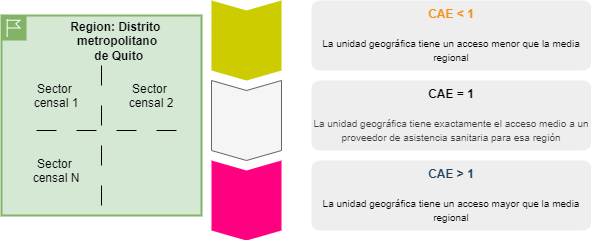
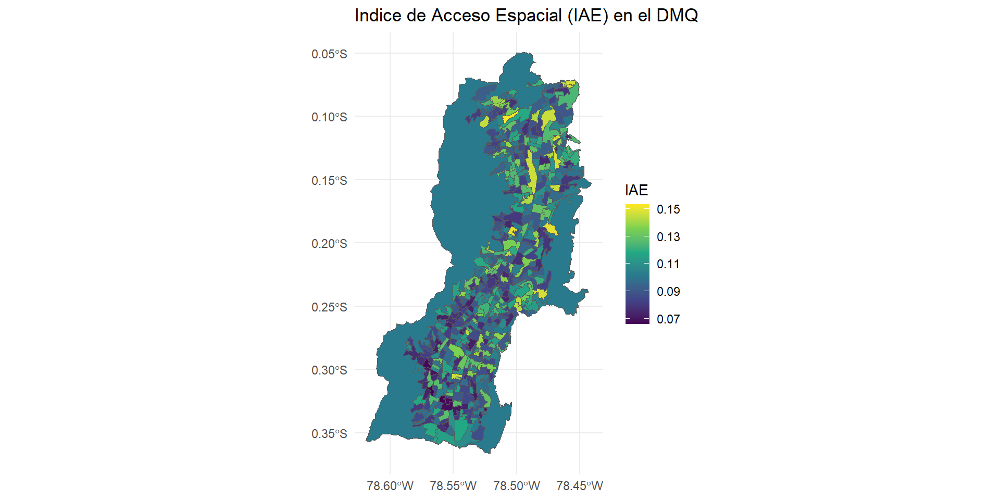
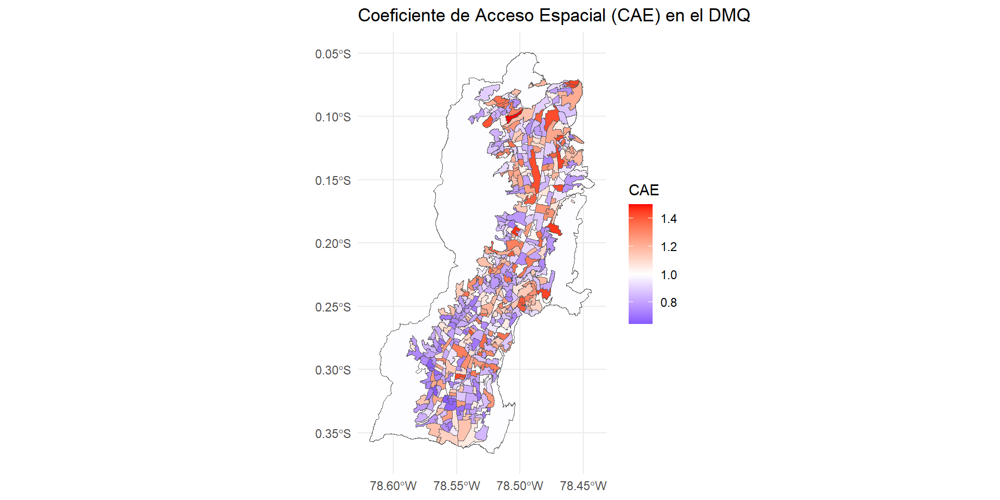

“The capability to avoid premature mortality, or to escape preventable morbidity, is a basic part of the freedom that we have reason to value.” — Amartya Sen, Development as Freedom (1999), p. 36
“Resulta indispensable mejorar el funcionamiento y gestión de las instituciones públicas del sector de salud de manera que respondan a las necesidades clínicas y no clínicas de la población. La correcta implementación del Modelo de Atención Integral en Salud y particularmente, de la Red Pública Integral a nivel nacional y local es prioritaria para delinear la correcta oferta de servicios en el primer, segundo y tercer nivel de atención.”
— Código Orgánico de la Salud, 2016
El SNS
En Ecuador, el Sistema Nacional de Salud (SNS) se organiza en tres niveles de atención:
- Primer nivel: Principalmente centros de salud
- Segundo nivel: Centros de especialidades
- Tercer nivel: Unidades de alta especilidad
Entre los niveles 1 y 2, se atienden el 95% de problemas sanitarios del país.
Primer Nivel de Atención
Este nivel de atención, por su contacto directo con la comunidad cubre a toda la población, este nivel resuelve las necesidades básicas y/o más frecuentes de la comunidad. Los servicios dan atención integral dirigida a: familia individuo y comunidad.
Prioridades: promoción y prevención.
Un sistema de salud basado en la atención primaria de salud orienta sus estructuras y funciones hacia los valores de la equidad y la solidaridad social, y el derecho de todo ser humano a gozar del grado máximo de salud que se pueda lograr sin distinción de raza, religión, ideología política o condición económica o social
– Organización mundial de la salud
Segundo Nivel de Atención
Este nivel comprende todas las acciones y servicios de atención ambulatoria especializada y aquellas que requieran hospitalización.
Constituye el escalón de referencia inmediata del I Nivel de Atención. Se desarrolla nuevas modalidades de atención no basadas exclusivamente en la cama hospitalaria, tales como la cirugía ambulatoria, el hospital del día. (Centro clínico quirúrgico ambulatorio).
Prioridades: diagnosticar y tratar enfermedades que necesitan médicos especialistas o atención más compleja.
Tercer Nivel de Atención
Este nivel de atención, corresponde a los establecimientos que prestan servicios ambulatorios y hospitalarios de especialidad y especializados, los centros hospitalarios son de referencia nacional; resuelve los problemas de salud de alta complejidad, tiene recursos de tecnología de punta, intervención quirúrgica de alta severidad, realiza trasplantes, cuidados intensivos, cuenta con subespecialidades reconocidas por la ley.
Prioridades: resolver los problemas de salud más graves y complejos, con médicos muy especializados y tecnología avanzada.
📊 La organización territorial del SNS
El Sistema Nacional de Salud (SNS) en Ecuador se estructura sobre la base de zonas, distritos y circuitos de salud, bajo el principio de atención integral y territorializada.
Sin embargo, en la práctica, la disponibilidad y distribución de los servicios especializados sigue siendo desigual entre áreas urbanas, periurbanas y rurales.
A pesar de avances, más del 30 % de la población rural enfrenta dificultades para acceder a servicios de salud oportuna y resolutiva (INEC, 2021).
🔍 ¿Realmente todos acceden a los servicios que necesitan, cuando y donde los necesitan?
🌐 Desigualdades territoriales y accesibilidad
📉 Acceso ≠ Presencia física del establecimiento
Tener un centro de salud cercano no garantiza el acceso efectivo: importa la oferta de servicios, el tiempo de desplazamiento, la congestión y la capacidad resolutiva.
En provincias como Morona Santiago o Esmeraldas, los tiempos promedio de traslado superan los 60 minutos para acceder al segundo nivel de atención (MSP, 2023).
📍 Medir dónde están los servicios ya no es suficiente: necesitamos saber quiénes realmente pueden llegar a ellos.
Sección 4: Calcular el Índice de acceso espacial y el Coeficiente de acceso espacial
4. Calcular el Índice de acceso espacial y el Coeficiente de acceso espacial
Objetivo
Guiar el cálculo e interpretación de métricas que evalúan el acceso a servicios hospitalarios.
Lecciones
Habilidad para aplicar estos índices en sus propios contextos y usarlos como herramientas para la toma de decisiones territoriales.
Objetivos de esta sección
Calcular el índice de acceso espacial (IAE).
Calcular el coeficiente de acceso espacial (CAE).
Índice de acceso espacial (IAE)
Paso 1:
Para cada ubicación de médicos \(j\), se buscan todas las ubicaciones de población \(k\) que se encuentren dentro de un tiempo de viaje umbral (\(d_0\)) desde la ubicación \(j\) (es decir, esta es el área de captación de la ubicación \(j\)), y se calcula la razón médico-población \(R_j\) dentro del área de captación:
\[
R_j = \frac{S_j}{\sum_{k \in \{d_{kj} \leq d_0\}} P_k}
\]
Índice de acceso espacial (IAE)
donde:
- \(P_k\) es la población en la ubicación \(k\) cuyo centroide cae dentro del área de captación \(j\) (\(d_{kj} \leq d_0\)),
- \(S_j\) es el número de médicos en la ubicación \(j\),
- \(d_{kj}\) es el tiempo de viaje entre \(k\) y \(j\).
Índice de acceso espacial (IAE)
Paso 2:
Para cada ubicación de población \(i\), se buscan todas las ubicaciones de médicos \(j\) que se encuentren dentro del tiempo de viaje umbral (\(d_0\)) desde la ubicación \(i\) (es decir, esta es el área de captación del punto de población \(i\)), y se suman las razones médico-población \(R_j\) (calculadas en el paso 1) en esas ubicaciones:
\[
A_i^F = \sum_{j \in \{d_{ij} \leq d_0\}} R_j = \sum_{j \in \{d_{ij} \leq d_0\}} \frac{S_j}{\sum_{k \in \{d_{kj} \leq d_0\}} P_k}
\]
Índice de acceso espacial (IAE)
Donde:
- \(A_i^F\) representa la accesibilidad de la población en la ubicación \(i\) a médicos, basada en el método de áreas de captación flotante en dos pasos.
- \(R_j\) es la razón médico-población en la ubicación del médico \(j\), cuyo centroide se encuentra dentro del área de captación centrada en la población \(i\) (es decir, \(d_{ij} \leq d_0\)),
- \(d_{ij}\) es el tiempo de viaje entre \(i\) y \(j\).
Índice de acceso espacial (IAE)
Interpretación
Un valor más alto de \(A_i^F\) indica un mejor acceso a médicos desde esa ubicación poblacional.
El primer paso asigna una razón inicial a cada área de captación (o área de servicio) centrada en las ubicaciones de los médicos, y el segundo paso suma esas razones iniciales en las áreas de captación superpuestas donde los residentes tienen acceso a múltiples ubicaciones médicas.
Este valor se genera para cada uno de los sectores censales y puede interpretarse como que cuanto mayor sea la puntuación, más acceso tiene ese sector censal a un proveedor de salud.
Coeficiente de acceso espacial (CAE)
Normalización e interpretación
Sin embargo, el valor del IAE es difícil de interpretar y requiere que conozcamos la distribución de el indicador en una región. Para poder interpretar el indicador se normaliza los valores IAE dividiéndolos por el valor IAE medio de toda la región.
Los valores CAE también indican el rango, de modo que si un sector censal tiene un CAE más alto que otro sector censal, entonces el sector censal con el valor CAE más alto tiene mayor acceso a un proveedor médico.
Coeficiente de acceso espacial (CAE)

Un primer ejercicio
Supuestos
- La población de cada zona censal es determinada por el Censo de Población y Vivienda 2022
- El número de doctores en cada hospital lo hemos asumido con una distribución uniforme entre 10 y 20 doctores por hospital.
- El número de hospitales en cada zona censal es determinado por la matriz de influencia creada anteriormente (OSM DATA).
Un primer ejercicio
Limitaciones
- La matriz de influencia no considera la capacidad resolutiva de cada hospital.
- El registro administrativo de Recursos y Actividades de Salud no dispone de información para poder identificar el hospital.
Indice de acceso espacial (IAE)

Coeficiente de acceso espacial (CAE)

Siguientes pasos
- Aplicar el método E2SFCA para calcular el acceso a servicios de salud en otras regiones del país.
- Solicitar al INEC acceso a la información sin anonimización para poder depurar el resultado
- Explorar la posibilidad de integrar otros indicadores de salud y servicios para enriquecer el análisis.
- Contrastar los resultados con datos administrativos y encuestas de salud para validar las conclusiones.